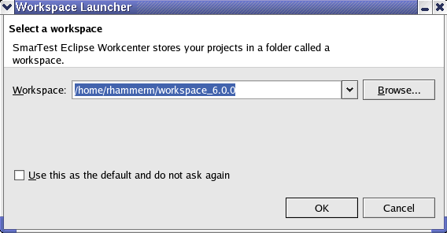

SmarTest workspaces
A workspace is an Eclipse environment, which contains the configuration settings and your projects you are currently working on.
The workspace contains a collection of device projects, device folders, and device files. It is a container for organizing your device projects that relate to a specific area.
The workspace resources are organized into a tree structure, with device projects at the top, and device folders and device files underneath. A workspace can have any number of device projects.
When you start the SmarTest Work Center the following dialog box appears:

As default SmarTest proposes the workspace location /home/<user name>/workspace_<revision>. For example, for SmarTest 6.5.3, the proposed workspace location is /home/<user name>/workspace_7.1.3.
Rules
- Make sure that the workspace directory is not located inside a project directory and vice versa.
- Using workspaces for different SmarTest versions:
Workspaces are not downward compatible. A workspace, which has been used in SmarTest 6.5.4 cannot be opened in SmarTest 7.1.
- Switching between SmarTest versions and to keep your workspace:
When you update SmarTest to a new major release (for example from 7.0.4 to 7.1.) create a new workspace with a name like my_workspace_7.1.. Thus you can use your old workspace when switching back to the older SmarTest 7.0.4 release.
- If you check the Use this as the default and do not ask again
checkbox, the Workspace Launcher window will not appear when you start
SmarTest next time. If you want it to show again, simply remove the directory:
<$HOME>/.eclipse
Functional changes
- Introduced before SmarTest 6.3.2
- SmarTest 6.5.0: Switch workspace in SmarTest.